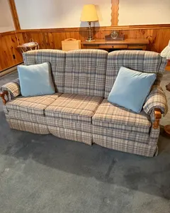
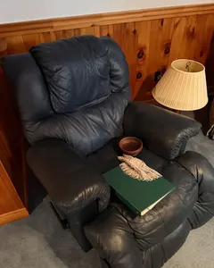
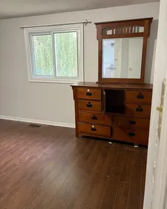
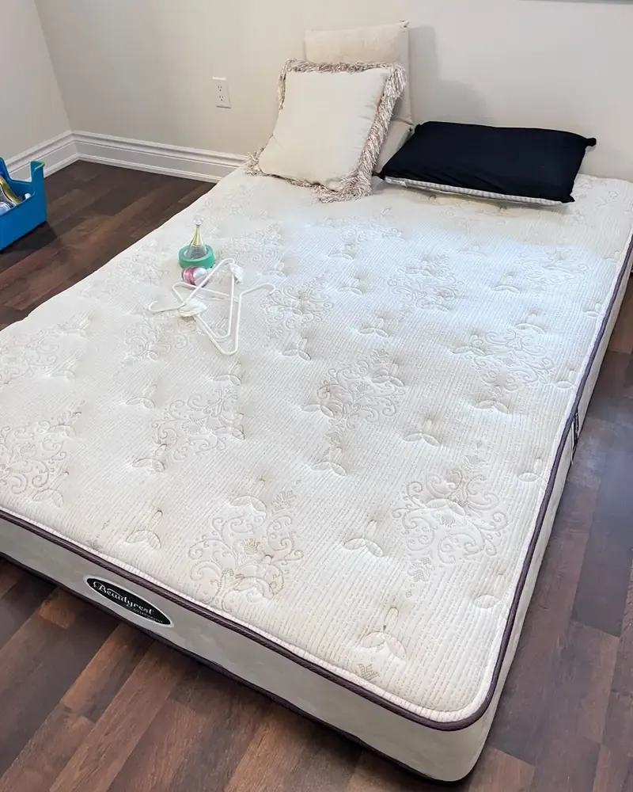

Couch to curb
What we carry out.
From any room, up or down the stairs.

CouchesSofas, sectionals, loveseats and sofa beds.
Recliners and chairsRecliners, armchairs, office and dining chairs.
Dressers and tablesDressers, wardrobes, desks, tables and shelves.Not sure about an item? Check an item.

Mattresses
Mattress removal and disposal.
Mattresses are awkward to carry, and most cars cannot take them. Leave it to us.
Carried out from any room. Down the stairs and out to the truck, box spring, frame and headboard too.One mattress or a whole house of them. Priced by how much of the bin it fills.Still good? A mattress in good shape goes to Furniture Bank, so a family can use it.Bed bugs? Only once it has been treated and the bed bugs are dead. It is a special case, so call us first.Still good?
Donate it or haul it?
Two ways to clear it out. We do both.
Rather take it yourself?
Furniture disposal in your town.
Here is what the towns we serve allow.
From the City of Barrie, City of Orillia and County of Simcoe websites, checked October 2026. Rules and fees change, so check with your town before you go.
Reviews
Don't take our word for it.
★★★★★
[Real Google review goes here]
★★★★★
[Real Google review goes here]
★★★★★
[Real Google review goes here]
Questions
Good questions, straight answers.
Still wondering? Call during business hours or text us any time.
Is there free furniture pickup in Barrie?
Not from the City. Furniture Bank takes good furniture as a donation, with a charitable tax receipt, and the donation pickup has a fee.
Can you take a whole house of furniture?
Yes. For a whole house, see our estate clean outs. Moving? Read our guide to clearing out a house before a move.